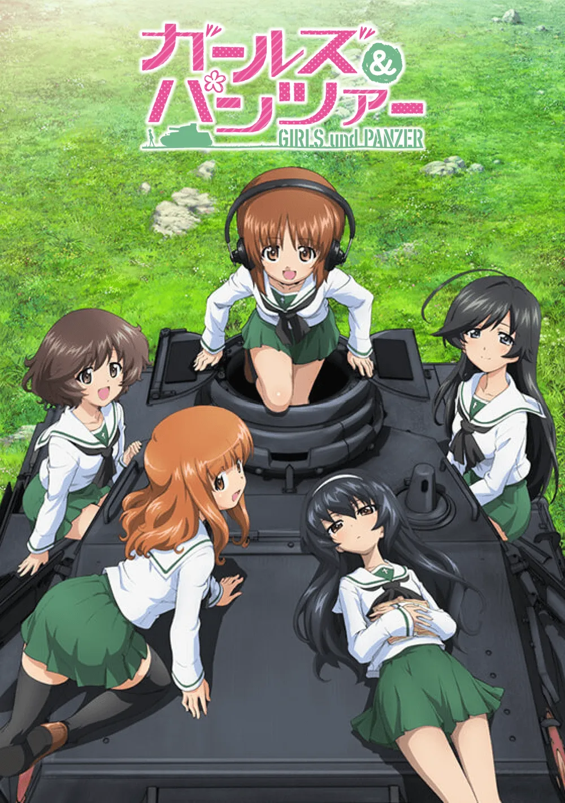
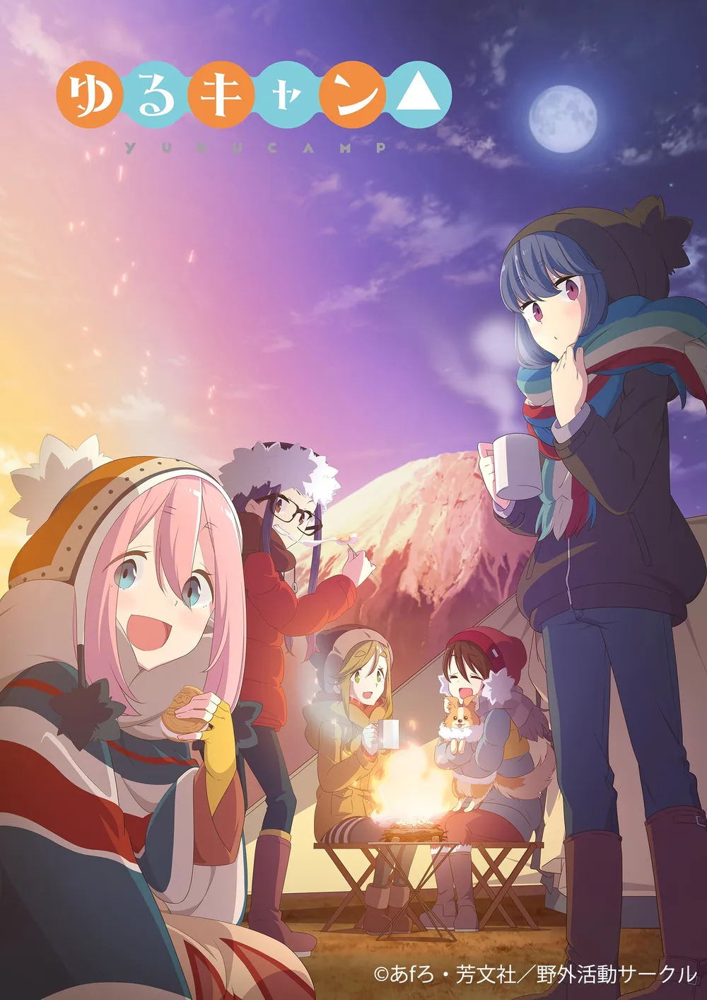
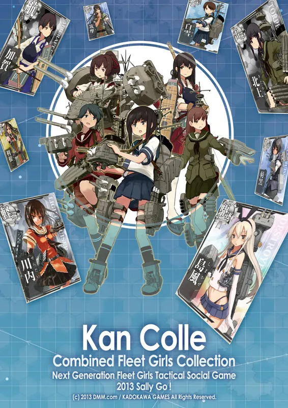

캐릭터에서 취미와 역사로
의인화의 팽창과 현실 지역 사회와의 연대 (2010s)
1. 전문 취미와 지역 사회의 연대
『걸즈 앤 판처』(2012) · 『유루캠△』(2018)


취미의 전문화:
캐릭터 애정이 전차 밀리터리, 캠핑, 여행 등 실제 전문 취미 영역으로 직접 확장.
지역 사회 융합:
단순 성지순례를 넘어 오아라이 정 등 실제 상점가·주민과 지속적 관계를 맺으며
지역 경제 생태계
와 결합.
2. 의인화(모에화)와 역사적 사물의 재구성
『함대 컬렉션』(2013) · 『도검난무』(2015)

역사의 캐릭터화:
군함·도검의 제원과 역사적 일화를 인물의 외형, 대사, 관계성으로 치밀하게 고증 및 치환.
문법의 거대 확장
:
웹 플랫폼 및 대규모 2차 창작 문화와 결합되어 팬덤이 역사적 사물을 재학습하고 실제 박물관 방문으로 이어짐.